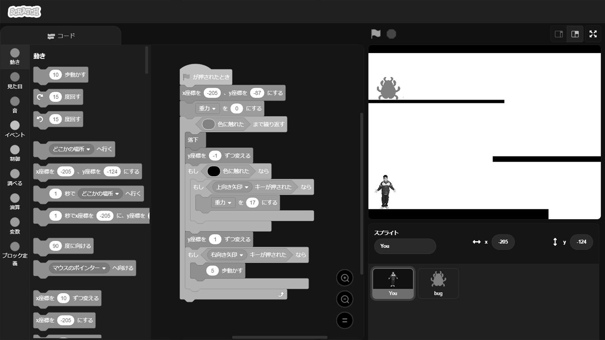
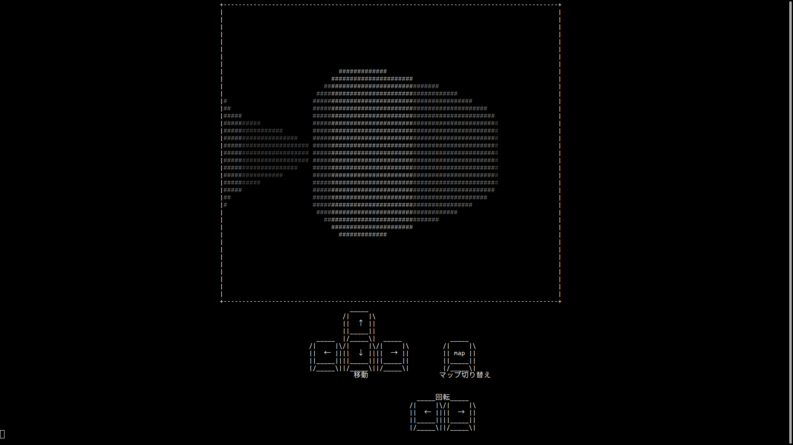

論理回路とは、ディジタル信号を処理し、
計算を行うための電子回路のことです。
適切な論理ブロックを入れ、
回路が正しく動作するように修正しましょう。
Introduction
ここは隕石によって色彩管理マシンが破壊され、色のデータが失われてしまった世界。 マシンを修復するためには、研究者の一員であるあなたの協力が必要です。 様々な修復作業をこなし、色のある世界を取り戻しましょう。
Contents
- 00
- 01
- 10
- 11
論理回路パズル
プログラム修正
CUI迷路
塗り絵
スクラッチにより開発されたゲームをクリアし、
装置のバグを取り除く必要があります。
しかし、このままではクリアできそうにありません。
プログラムを修正することでクリアしましょう。
装置のバグを取り除く必要があります。
しかし、このままではクリアできそうにありません。
プログラムを修正することでクリアしましょう。
CUIとは、文字のみによって
コンピュータを操作する方式のことです。
ディスプレイ上に表示されている迷路を攻略し、
色彩データを獲得しましょう。
コンピュータを操作する方式のことです。
ディスプレイ上に表示されている迷路を攻略し、
色彩データを獲得しましょう。
色彩データを取り戻すだけでなく、
世界の色を定義づける必要があります。
世界に色彩データを与え、
色のある世界を取り戻しましょう。
世界の色を定義づける必要があります。
世界に色彩データを与え、
色のある世界を取り戻しましょう。
000
00
100
10
110
01
111
11
Access
Attention
- 参加には整理券が必要です。
- 整理券は4Iの会場に来ていただいた際にお渡しします。
- 整理券は時間帯指定です。
- 参加できる時間帯・組数には限りがございます。
- 指定時刻の5分前には会場にお越しいただくようご協力をお願いいたします。